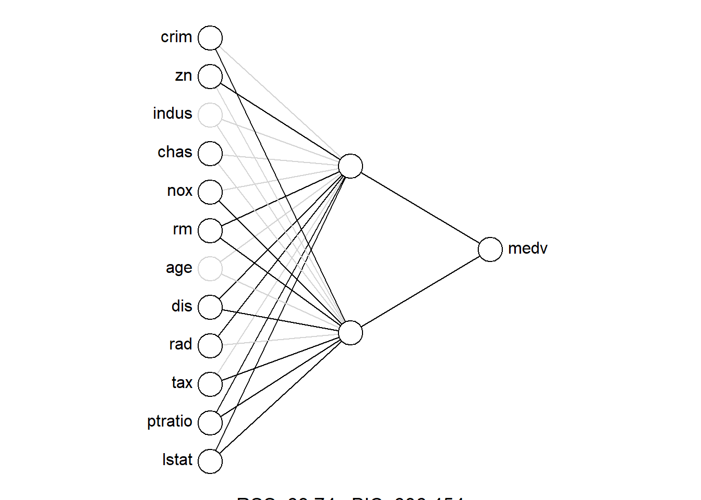
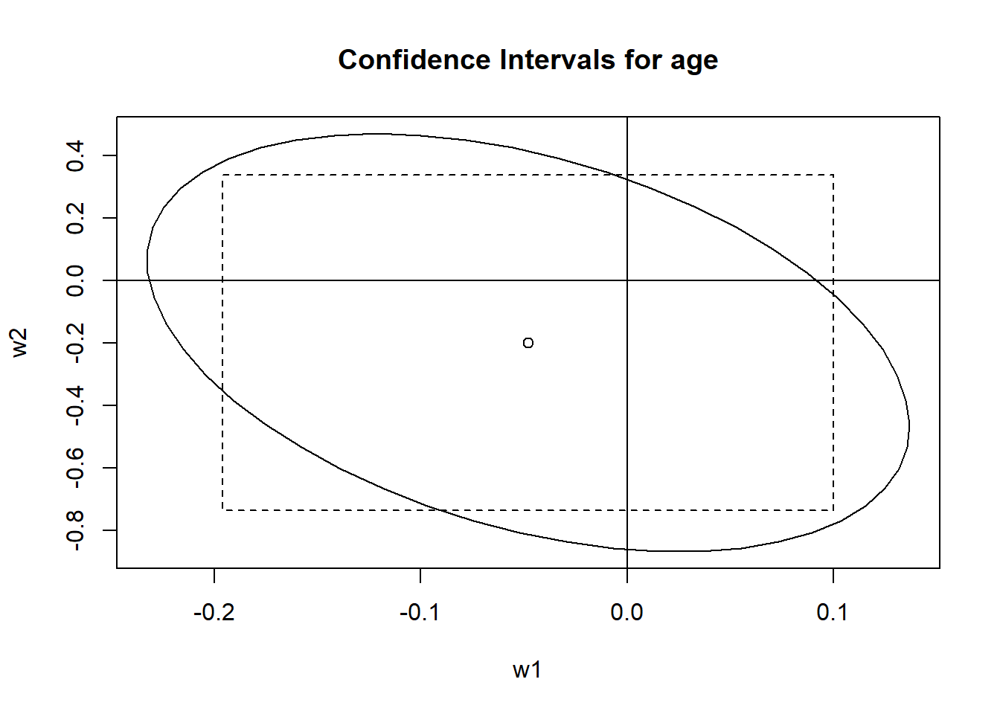

statnn: Feedforward neural networks as statistical models
Andrew McInerney 1
@amcinerney_
@andrew-mcinerney
andrew.mcinerney@ul.ie
Kevin Burke 1
1 Department of Mathematics & Statistics, University of Limerick
Introduction
Currently, there are around 80 packages available on the Comprehensive R Archive Network (CRAN) that allow for the fitting of neural networks. Some of the more popular packages are nnet (Ripley and Venables 2022), neuralnet (Fritsch, Guenther, and Wright 2019), keras (Allaire and Chollet 2023), and torch (Falbel and Luraschi 2023). The goal of our R package, , is to extend some of the existing R packages for neural networks to allow for more useful and insightful statistical-based methods and outputs. This not only increases the utility of neural networks for statisticians, but it also bridges the gap between the explainability and flexibility of neural networks. This package, to the best of our knowledge, is the first package in R that provides these statistically-based summaries for neural networks.
Installation
You can install the development version of statnn from GitHub with:
# install.packages("devtools")
devtools::install_github(
"andrew-mcinerney/statnn"
)Implementation
The use of statnn is explained through a real-data application. Here, we use the Boston Housing dataset, and we use the nnet function for fitting our neural network.
library(statnn)
# set.seed(100)
nn <- nn_fit(
formula = medv ~ ., data = Boston,
q = 2, n_init = 10, pkg = "nnet"
)We can then convert the fitted neural network to an object of class "statnn" using
stnn <- statnn(nn)Model Summary
The summary() method can then be used on the new object, stnn, to get a useful, statistical-based summary table for the neural network, similar to that of other regression models in R.
summary(stnn)## [...]
## Coefficients:
## Wald
## Estimate Std. Error | X^2 Pr(> X^2)
## crim -0.50367 0.081495 | 15.86103 3.60e-04 ***
## zn 0.89640 0.080631 | 7.13194 2.83e-02 *
## indus -0.85112 0.069471 | 0.10822 9.47e-01
## chas 0.71421 0.197013 | 8.12925 1.72e-02 *
## nox -0.71383 0.083767 | 16.20045 3.03e-04 ***
## rm 0.94949 0.075320 | 102.72926 0.00e+00 ***
## age -0.70553 0.075340 | 1.54725 4.61e-01
## dis 0.58585 0.092786 | 39.16725 3.13e-09 ***
## rad -0.48035 0.086820 | 41.56443 9.43e-10 ***
## tax -0.76588 0.076431 | 10.40137 5.51e-03 **
## ptratio -0.93611 0.067431 | 19.46303 5.94e-05 ***
## lstat -1.27902 0.057990 | 59.52595 1.19e-13 ***
## ---
## Signif. codes: 0 '***' 0.001 '**' 0.01 '*' 0.05 '.'
## 0.1 ' ' 1
##
## [...]The plotnn() function is used to visualise results of the single- and multiple-parameter Wald tests in a diagram of the neural network architecture.
The significance level can be changed using the alpha argument (default: 0.05).
By default, significant weights and nodes are coloured black and insignificant weights and nodes are coloured light grey.
The intercept terms can be displayed by setting intercept = TRUE (default: FALSE).
plotnn(stnn)
The plotci() function is used to visualise the Wald (1 - \(\alpha\))100% single-parameter confidence intervals and the Wald (1 - \(\alpha\))100% joint confidence ellipses for the input-to-hidden-layer weights for each covariate.
The which argument specifies which covariate’s confidence intervals are to be displayed (default: NULL, displays plots for all covariates).
plotci(stnn, which = 7)
Covariate Effect Plots
References
Allaire, JJ, and François Chollet. 2023. Keras: R Interface to “Keras”. https://CRAN.R-project.org/package=keras.
Falbel, Daniel, and Javier Luraschi. 2023. Torch: Tensors and Neural Networks with ’GPU’ Acceleration. https://CRAN.R-project.org/package=torch.
Fritsch, Stefan, Frauke Guenther, and Marvin N. Wright. 2019. Neuralnet: Training of Neural Networks. https://CRAN.R-project.org/package=neuralnet.
Ripley, Brian, and William Venables. 2022. Nnet: Feed-Forward Neural Networks and Multinomial Log-Linear Models.